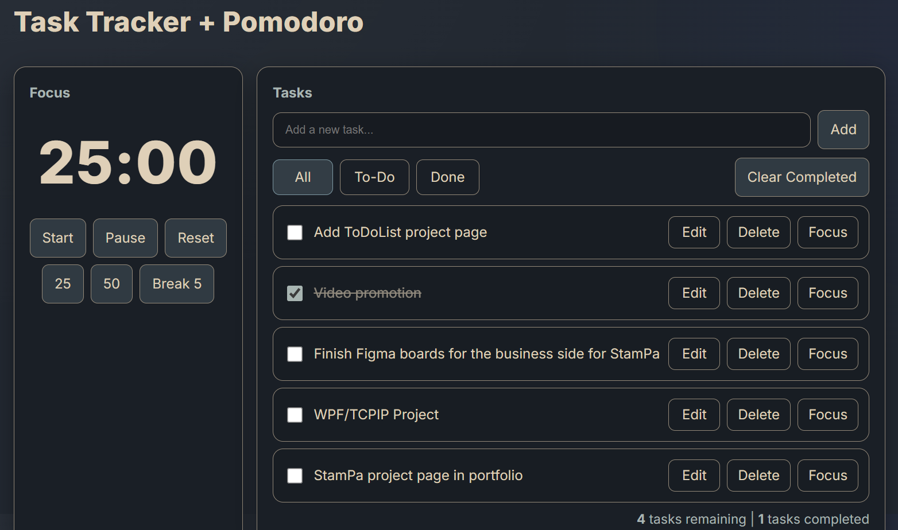

Task Tracker + Pomodoro
Overview
A simple web-based to-do-list with a built in Pomodoro timer. It keeps track of the user's tasks that they create and allow for them to be marked as complete or deleted.
Key Features
- Task creation, editing, and deletion.
- Task filtering by status (All, To-Do, Completed).
- Pomodoro timer with start, pause, and reset functionality.
- Predefined time intervals for work and break sessions.
Technologies Used
- Frontend: HTML, CSS, JavaScript
- Accessibility: ARIA roles and attributes for better usability
Screenshots
